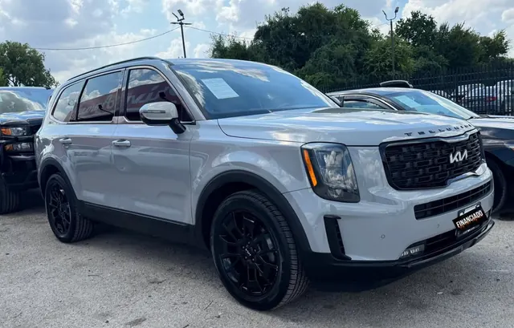
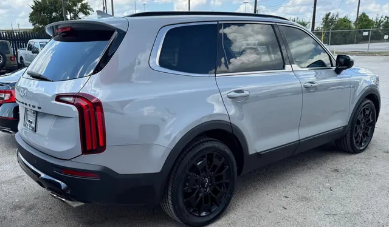

2022 Kia Telluride
Plata • ID CCH-06


Especificaciones
| Año | 2022 |
| Marca | Kia |
| Modelo | Telluride |
| Tipo | SUV |
| Color | Plata |
| Millas | 40,000 millas |
| Asientos | 7 u 8 pasajeros |
| Motor | 3.8L V6 GDI |
| Potencia | 291 hp |
| Torque | 262 lb-pie |
| Transmisión | Automática de 8 velocidades |
| Tracción | Por confirmar |
| Combustible | Gasolina |
Se ve en las fotos
- 3 filas
- Rines negros
- Detalles en negro
Ideal para
Familias que quieren 3 filas en una SUV más fácil de manejar y estacionar en la ciudad.
Ficha técnica del modelo según el fabricante y medios especializados. Confirma los datos exactos de esta unidad con el dealer.
Único motor del modelo según Kia (ficha técnica MY22) y CarBuzz: 3.8L V6 GDI, 291 hp / 262 lb-pie, automática de 8. Tracción no confirmada: FWD de serie, AWD opcional.